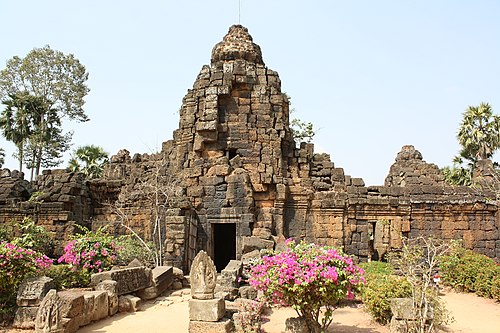

Takéo (Khmer: តាកែវ, 'The Grandpa Keo') is a province (khaet) of Cambodia. Located in the south of Cambodia to the west of Bassac River, Takéo borders the provinces of Kampot to the west, Kampong Speu to the northwest and Kandal to the north and east. Its southern boundary is the international border with Vietnam (An Giang). The provincial capital, recently known as the provincial town Doun Kaev (formerly called Takeo), is a small city with a population of 39,186. Takéo is often referred to as the "cradle of Khmer civilization" due to the former kingdom of Funan and its successor, Water Chenla [km], being centered in the region.
